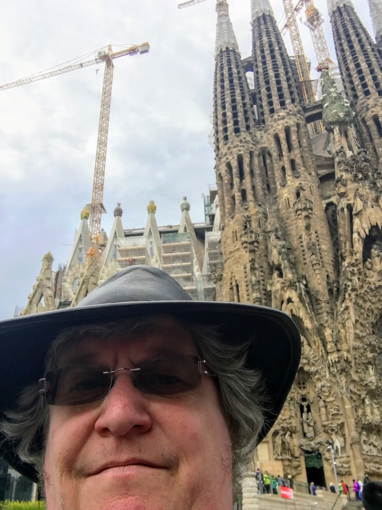
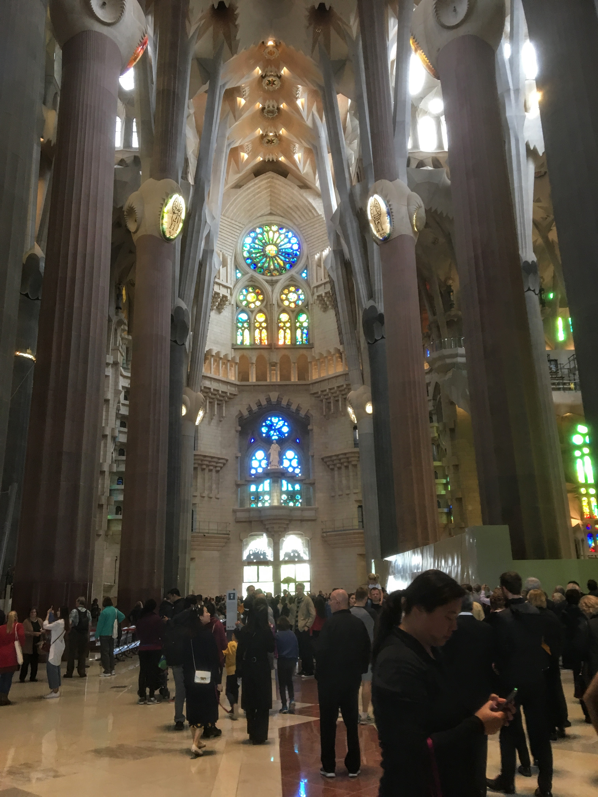

Britannia Cruise 2018
Saturday May 5th 2018
We arived in Barcelona at 8.00am. It is the capital of Catalonia and Spain's second largest city. It has been populated since around 100 BCE
when the Romans established Augusta Barcino. The Visigoths invaded in 414 and 300 years later the Moors captured the town. The unification
of Catalunya and Aragon in 1137 led to Barcelona becoming a major trading city. The discovery of America had a damaging effect as the
emphasis shifted to the Atlantic port of Cadiz. Barcelona backed the losing Habsburg side in the Spanish War of succession. The Bourbons
occupied the city and banned the Catalan language. Demands for self rule have steadily grown. In 1932 Catalunya achieved a significant
level of self government but the province strongly supported the Republican causes in the Spanish Civil War and Franco again forbade the
speaking of Catalan, even in private. It has achieved some autonomy in the past twenty years, and was host to the 1992 Summer Olymoics.

I had booked an appointment to visit Gaudi's La Sagrada Familia Cathedral before
leaving the UK, as visitor numbers are tightly controlled. It was spitting with rain as I was setting off out, leaving Mum on board, so I
splashed out and took a taxi.
The Basilica Project was taken over by Antoni Gaudi in 1883, and from 1914 was the only project he worked on. The Saint Barnabas bell tower
on the Nativity façade was completed in 1925 and was the only one Gaudi would see finished, as he died in 1926, and is buried in the crypt.
It was vandalised during the Spanish Civil War. Revolutionaries set fire to the crypt, and broke their way into the workshop, partially
destroying Gaudí's original plans, drawings and plaster models, which led to 16 years of work to piece together the fragments of the master
model.On 7 November 2010, Pope Benedict XVI consecrated the Basilica for religious worship and designated it a minor basilica, but
construction work still continues to this day. It is anticipated that the building can be completed by 2026, the centenary of Gaudí's
death.
The Nativity Façade is dedicated to the birth and life of Jesus. You can see the
wedding of Mary and Joseph, the flight to Egypt, the massacre of the innocent, the Annunciation of Virgin Mary, the Nativity,
the Adoration of Magi, the Adoration of the Shepherds, the Presentation of Jesus
in the temple, Jesus preaching in the temple, Mary’s visit to Elizabeth, Jesus working as a carpenter, the cypress, the tree of life and
much more. Also almost finished is the the Cloister of Dolours and sacristy.

Almost finished at the time of my visit, on the opposite side of the Basilica from the Nativity Façade is the Passion Façade. This is a
much less ornate, more angular design, which contains an odd piece of ornamentation, next to the sculture of Judas Kiss, which I spotted
quite by accident - an enchantment or magic square. A magic square is an
arrangement of numbers, (usually integers,) in a square grid, where the numbers in each row, and in each column, and the numbers in the
forward and backward main diagonals, all add up to the same number. The constant that is obtaine by adding the 4 rows, 4 columns and 2
diagonals of this square is 33. Thirty-three was, according to Christian tradition, the age when Christ was crucified.
The floorplan of this basilica is designed like a latin cross and the interior is designed like a forest, with
branching columns rising up from 15 meters tall in the choirs surrounding the inside of the basilica. and 75 meters tall in the
apse. This innovative structural solution allows the
sunlight to flood in through the windows. There are gaps in the floor of the
apse, providing a view down into the crypt below. At the time of my visit, there
seemed to be a confirmation service taking place in the crypt.
The columns of the interior are a unique Gaudí design. Besides branching to support their load, their ever-changing surfaces are the result
of the intersection of various geometric forms. The simplest example is that of a square base evolving into an octagon as the column rises,
then a sixteen-sided form, and eventually to a circle. This effect is the result of a three-dimensional intersection of helicoidal columns
(for example a square cross-section column twisting clockwise and a similar one twisting counter-clockwise).
For such a tourist driven location, the sense of peace and quiet inside was amazing. The light from all the windows was brilliant,
especially when the sun started shining outdoors. The visit was well organised, and of course, you couldn't get out until you'd passed
through the gift shop. I bought nothing, and after a bit of a struggle, got a taxi back down to the ship to regale Mum with the tale of
my visit.
Our evening meal choices were:
- Starters: Red Pepper and Iberico Ham Risotto; Smoked Salmon; Pulled Beef with Picalilli; Confit Plum Tomato with Crished Black
Olives; Korean Kimchi Jigae Soup, Sald Lyonnaise
- Mains: Darne of Atlantic Hake; Salmon, Tuna and Tiger Brown Brochette; Slow Cooked Pork Collar Steak; Traditional Cheese and Onion
Pie; Southern Fried Chicken; P&O Cruises Mixed Grill
- Desserts: Queen of Pudding; Baked New York Cheesecake; Orange Curd and italian meringue Tart; Chocolate and Pretzel Ganache with
Dark Chocolate Mousse; Oreo Cookies and Cream Sundae; Lemon Sorbet